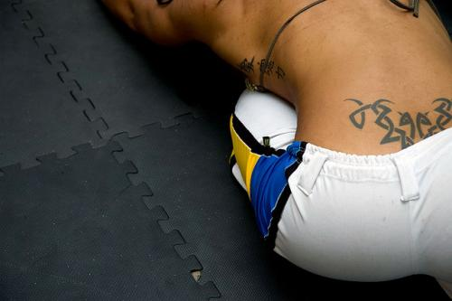
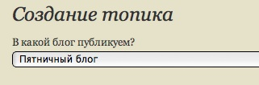

Пятничным постам пятничный блог

Открываем «Пятничный блог» новым пятничным постом. Публикуем сюда, как обычно: что-то красивое, легкомысленное, эротичное и связанное с капуэйрой ;)С содержанием предыдущих постов можно ознакомиться здесь, здесь и, наверное, здесь.
Как публиковать пост в „Пятничный блог“?
- Зайдите на страницу блога — http://capoeira.in/blog/friday/
- Нажмите на кнопку-розетку и вы присоединитесь к блогу.
- На странице создания топика в поле «В какой блог публикуем» выбираем — Пятничный блог.
- Пишем содержание и заполняем метки, убеждаемся, что на дворе пятница и жмём кнопку «опубликовать».
- …
- PROFIT!
P.S.:
Не забываем подымать рейтинг блогу и постам, которые вам понравились ;)